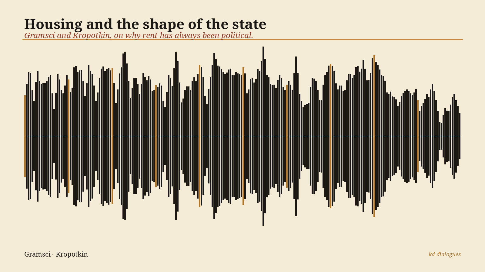

<!-- kd-dialogues audio embed :: housing-and-hegemony -->
<!-- Replace the src below with a public URL to the mp3, e.g. a GitHub raw URL. -->
<figure style="max-width:640px;margin:1.4rem auto;font-family:'Noto Serif',Georgia,serif;color:#1c1816">
  
  <audio controls preload="metadata" style="width:100%;margin-top:8px">
    <source src="https://raw.githubusercontent.com/robertmccallnz/kd-dialogues/main/episodes/001-housing-and-hegemony/housing-and-hegemony.mp3" type="audio/mpeg">
    Your browser cannot play this audio. <a href="https://raw.githubusercontent.com/robertmccallnz/kd-dialogues/main/episodes/001-housing-and-hegemony/housing-and-hegemony.mp3">Download the mp3</a>.
  </audio>
  <figcaption style="font-style:italic;text-align:center;color:#4a4238;margin-top:6px">
    Housing and the shape of the state — Gramsci and Kropotkin, on why rent has always been political.
  </figcaption>
</figure>
